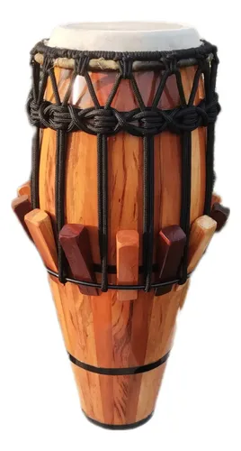

Percussão
Atabaque
Membranofone
Tambor alto, de corpo alongado e uma única membrana, feito de madeira e couro e afinado por cunhas ou cordas. Costuma aparecer em conjuntos de três tamanhos: rum (grave), rumpi (médio) e lê (agudo).
- Função
- Sustenta a base rítmica das rodas e das giras, acompanhando cantos e pontos e organizando a parte musical da cerimônia ou do jogo.
- Como é tocado
- Tocado com as mãos ou com varetas (aguidavis), conforme a tradição de cada grupo ou casa.
- Observação
- Seu uso, função e execução variam conforme a manifestação e a comunidade.